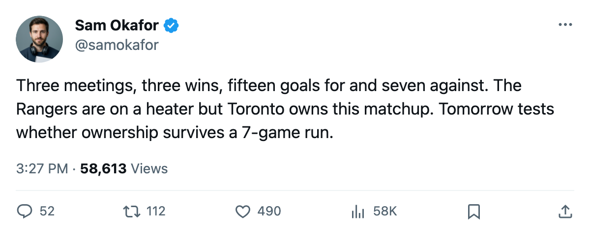

Ahead of NYR: a 7-game heater, 2 games in hand, and the only Eastern club that can still make you look
Toronto owns this season series 3-0-0, but the Rangers sit 6 points back with two games in hand and the hottest streak in the conference.

The  New York Rangers arrive at the Garden tomorrow on their 7th straight win, holding 62 points in 45 games.
New York Rangers arrive at the Garden tomorrow on their 7th straight win, holding 62 points in 45 games.  Toronto Maple Leafs leads the East at 68 points in 43. That is two games in hand and a heater that has carried New York Rangers past everyone else in the Atlantic Division. The head-to-head reads 3-0-0 with a 15-7 goal differential.
Toronto Maple Leafs leads the East at 68 points in 43. That is two games in hand and a heater that has carried New York Rangers past everyone else in the Atlantic Division. The head-to-head reads 3-0-0 with a 15-7 goal differential.
The Rangers are the only club in the Eastern Conference with a path to Toronto's point total.  New Jersey Devils sits at 59 in 40 games. Everyone else trails by more than 10. If the Rangers keep this run alive and Toronto wobbles through the remaining 4 games against them, the gap closes to two points.
New Jersey Devils sits at 59 in 40 games. Everyone else trails by more than 10. If the Rangers keep this run alive and Toronto wobbles through the remaining 4 games against them, the gap closes to two points.
Two men come back to the building
 Jamie Lundmark83 wears a Toronto sweater on the ice at his old home for the first time. He left New York Rangers on 2005-05-31 and has 9 points in 35 games at 8.0 minutes a night, carrying +8 on the Bureau's Development Index. The Rangers' side of the transaction brought
Jamie Lundmark83 wears a Toronto sweater on the ice at his old home for the first time. He left New York Rangers on 2005-05-31 and has 9 points in 35 games at 8.0 minutes a night, carrying +8 on the Bureau's Development Index. The Rangers' side of the transaction brought  Kenny Jonsson77, who turns up at home to his former club on the same night.
Kenny Jonsson77, who turns up at home to his former club on the same night.
New York Rangers will be without  Pavel Bure83 (concussion, expected back 2006-02-28). Their penalty-kill depth thins without him, and Toronto's top unit has not been punished this season.
Pavel Bure83 (concussion, expected back 2006-02-28). Their penalty-kill depth thins without him, and Toronto's top unit has not been punished this season.
The shape of the series
All 3 meetings went to Toronto. The goal margin tells you more than the record: 15 for, 7 against across 3 games. The Rangers' streak means they are healthy and confident and have not lost since before December ended.
 Marian Gaborik99 leads the risers list at +11 on the Index, sitting at 99 overall on 23 games and 14 points. Ten goals, 4 assists in 23 games. The raw totals undersell how different the top six looks with him back.
Marian Gaborik99 leads the risers list at +11 on the Index, sitting at 99 overall on 23 games and 14 points. Ten goals, 4 assists in 23 games. The raw totals undersell how different the top six looks with him back.
The starting goaltender is not decided.  Roberto Luongo95 has dressed in 23 of 43 and Maxime Ouellet86 in 10. The committee has gone back and forth since January opened, and Luongo's last start came on 2006-01-11 at Boston Bruins, a 4-2 win.
Roberto Luongo95 has dressed in 23 of 43 and Maxime Ouellet86 in 10. The committee has gone back and forth since January opened, and Luongo's last start came on 2006-01-11 at Boston Bruins, a 4-2 win.
What it costs
If Toronto wins, the lead over New York Rangers stretches to 8 points with the Rangers still carrying those 2 extra games. If Toronto loses, the gap is 6 and the schedule compresses. Neither result ends the season, and both change how much room the next three weeks allow.
